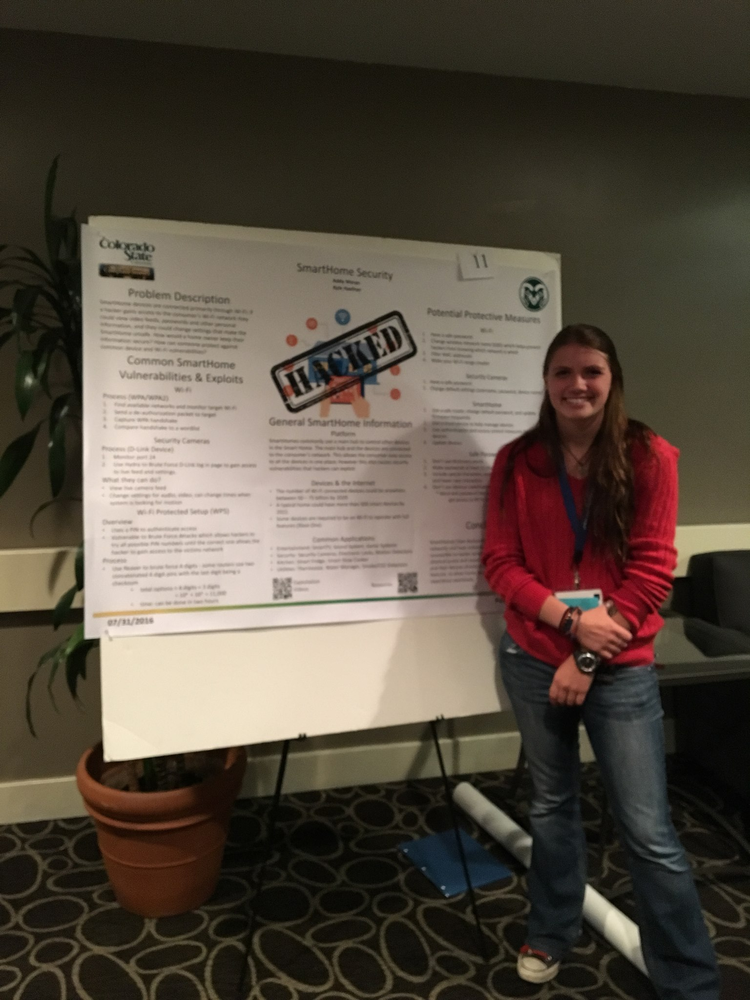

Favorite Quotes
"It had long since come to my attention that people of accomplishment rarely sat back and let things happen to them. They went out and happened to things."
- Leonardo da Vinci
"Always code as if the guy who ends up maintaining your code will be a violent psychopath who knows where you live."
- Martin Golding
"Thinking outside of the box keeps you from suffocating inside of one."
― Matshona Dhliwayo
“Engineers like to solve problems. If there are no problems handily available, they will create their own problems.”
― Scott Adams